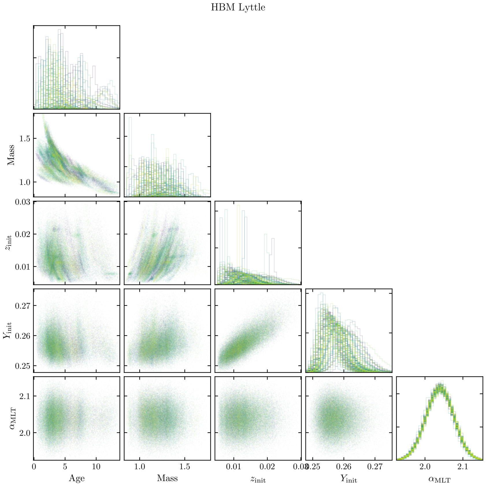

An ERC project · University of Birmingham
A clearer picture
of our stars.
Hidden inside every star, helium helps shape its life story. CartographY brings together the rhythms of stars and new statistical methods to uncover this missing piece.

- Research focus
- Mapping stellar helium
- Host institution
- University of Birmingham
- ERC grant
- 804752 · Starting Grant
- Project period
- April 2019 – June 2026
The question
What are stars
really made of?
A star’s age, mass and evolution depend on the ingredients it was born with. One of those ingredients, helium, is particularly difficult to measure in cool stars like our Sun.
When we cannot measure helium, we often have to assume how much is there. Those assumptions affect the ages and other properties we infer — and the stories we tell about planets and the Milky Way.
CartographY investigates how to replace those assumptions with better constraints, using asteroseismology: the study of the tiny oscillations that let us probe a star’s interior.
Our approach
Listen. Model. Understand.
Listen to the stars
Space telescopes record small changes in starlight. We measure the oscillation frequencies hidden in these observations to learn about stellar interiors.
Build better models
We combine stellar evolution calculations with statistical methods and machine learning, making detailed models faster to use while accounting for their uncertainties.
Learn from populations
By analysing stars together, we can study their shared properties and investigate helium enrichment, stellar ages and the history of our Galaxy.